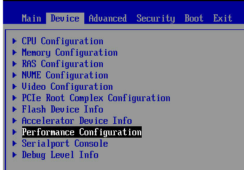
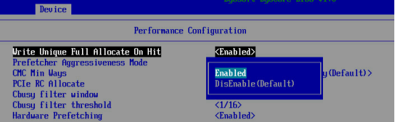

概述
CPU的Cache、内存和磁盘之间的访问速度差异很大，当CPU计算所需要的数据并没有及时加载到内存或Cache中时，CPU将会浪费很多时间等待磁盘的读取。
高负载下，磁盘成为平静，CPU持续空闲以等待磁盘I/O结束，发现并消除这些瓶颈能让性能和应用程序吞吐量提升几个数量。
计算机系统通过cache、RAM、固态盘、磁盘等多级存储结构，并配合多种调度算法，来消除或缓解这种速度不对等的影响。但是缓存空间总是有限的，我们可以利用局部性原理，尽可能的将热点数据提前从磁盘中读取出来，降低CPU等待磁盘的时间浪费。因此我们的部分优化手段其实是围绕着如何更充分的利用Cache获得更好的IO性能。
监控分析工具
| 工具 | 说明 |
|---|---|
| iostat | 磁盘I/O使用率、IOPS、吞吐量、响应时间、I/O平均大小以及等待队列长度等 |
| pidsat | 进程I/O大小以及I/O延迟 |
| sar | 磁盘I/O使用率、IOPS、吞吐量、响应时间 |
| iotop | 按I/O大小对进程排序 |
| dstat | 磁盘I/O使用率、IOPS、吞吐量 |
| slabtop | 目录项，索引节点已经文件系统缓存 |
| /proc/slabinfo | 目录项，索引节点已经文件系统缓存 |
| /proc/diskstats | 磁盘的IOPS，吞吐量以及延迟 |
| /proc/pid/io | 进程IOPS、I/O大小以及I/O延迟 |
| vmstat | 缓存和缓冲区用量汇总 |
| perf | 跟踪内核中的I/O事件 |
| df | 磁盘空间和索引节点使用量和剩余量 |
| du | 目录占用的磁盘空间大小 |
| mount | 文件系统挂载路径以及挂载参数 |
| nvme cli | 一套完整的工具来协助我们查看和管理NVME |
优化方法
mount挂载选项
mount有很多挂载选项可以调优：
- 选项noatime被用来通过避免访问时间戳更新及其相关的磁盘I/O来提高性能。
- nobarrier：当前Linux文件系统，基本上采用了日志文件系统，确保在系统出错时，可以通过日志进行恢复，保证文件系统的可靠性。Barrier（栅栏），即先加一个栅栏，保证日志总是先写入，然后对应数据才刷新到磁盘，这种方式保证了系统崩溃后磁盘恢复的正确性，但对写入性能有影响。服务器如果采用了RAID卡，并且RAID本身有电池，或者采用其它保护方案，那么就可以避免异常断电后日志的丢失，我们就可以关闭这个栅栏，可以达到提高性能的目的。修改方式如：
# mount -o nobarrier -o remount /home/disk0
缓存调优
内核系统和文件系统会使用多种缓存，包括缓冲区高速缓存、目录缓存、inode缓存和文件系统页缓存，检查它们并调优。
- inode大小可以通过/proc/sys/fs/inode*文件查看
- 目录缓存通过/proc查看
- 页缓存大小是动态的，会不断增长以耗尽可用的内存，直到应用程序需要的时候再行释放。页缓存中需要回写到磁盘的数据为脏数据。在应用程序通知系统保存脏数据时，应用可以选择直接将数据写入磁盘（O_DIRECT），或者先写到PageCache（非O_DIRECT模式）。非O_DIRECT模式，对于缓存在PageCache中的数据的操作，都在内存中进行，减少了对磁盘的操作。
系统中提供了以下参数来调整脏数据刷新策略：
- /proc/sys/vm/dirty_expire_centiseconds此参数用于表示脏数据在缓存中允许保留的时长，即时间到后需要被写入到磁盘中。此参数的默认值为30s（3000 个0.01秒）。如果业务的数据是连续性的写，可以适当调小此参数，这样可以避免IO集中，导致突发的IO等待。可以通过echo命令修改：
# echo 2000 > /proc/sys/vm/dirty_expire_centisecs - /proc/sys/vm/dirty_background_ratio脏页面占用总内存最大的比例（以memfree+Cached-Mapped为基准），超过这个值，pdflush线程会刷新脏页面到磁盘。增加这个值，系统会分配更多的内存用于写缓冲，因而可以提升写磁盘性能。但对于磁盘写入操作为主的的业务，可以调小这个值，避免数据积压太多最后成为瓶颈，可以结合业务并通过观察await的时间波动范围来识别。此值的默认值是10，可以通过echo来调整：
echo 8 > /proc/sys/vm/dirty_background_ratio - /proc/sys/vm/dirty_ratio为脏页面占用总内存最大的比例，超过这个值，系统不会新增加脏页面，文件读写也变为同步模式。文件读写变为同步模式后，应用程序的文件读写操作的阻塞时间变长，会导致系统性能变慢。此参数的默认值为40，对于写入为主的业务，可以增加此参数，避免磁盘过早的进入到同步写状态。
ionice
设置进程的I/O调度级别和优先级。
块设备参数配置
磁盘文件预读参数
文件预取，就是根据局部性原理，在读取数据时，会多读一定量的相邻数据缓存到内存。如果预读的数据是后续会使用的数据，那么系统性能会提升，如果后续不使用，就浪费了磁盘带宽。在磁盘顺序读的场景下，调大预取值效果会尤其明显。
文件预取参数由文件read_ahead_kb指定，CentOS中为“/sys/block/$DEVICE-NAME/queue/read_ahead_kb”($DEVICE-NAME为磁盘名称)，如果不确定，则通过命令以下命令来查找：# find / -name read_ahead_kb
此参数的默认值128KB，可使用echo来调整，仍以CentOS为例，将预取值调整为4096KB：# echo 4096 > /sys/block/$DEVICE-NAME /queue/read_ahead_kb
设备允许的最大请求大小
max_sectors_kb：一次请求中block 层最大支持多少KB数据。值越大，传输时延就越高，需要结合业务选择合适的大小，否则可能造成过大时延，导致CPU利用率增高。
IO调度策略
文件系统在通过驱动读写磁盘时，不会立即将读写请求发送给驱动，而是延迟执行，这样Linux内核的IO调度器可以将多个读写请求合并为一个请求或者排序（减少机械磁盘的寻址）发送给驱动，提升性能。我们在前文介绍工具iostat时，也提到了合并的统计，这个值就是由这个过程统计获得。
目前Linux版本主要支持3种调度机制：
CFQ，完全公平队列调度
早期Linux 内核的默认调度算法，它给每个进程分配一个调度队列，默认以时间片和请求数限定的方式分配IO资源，以此保证每个进程的IO资源占用是公平的。这个算法在IO压力大，且IO主要集中在某几个进程的时候，性能不太友好。DeadLine，最终期限调度
这个调度算法维护了4个队列，分别为读队列、写队列、超时读队列和超时写队列。当内核收到一个新请求时，如果能合并就合并，如果不能合并，就会尝试排序。如果既不能合并，也没有合适的位置插入，就放到读或写队列的最后。一定时间后， IO调度器会将读或写队列的请求分别放到超时读队列或者超时写队列。这个算法并不限制每个进程的IO资源，适合IO压力大且IO集中在某几个进程的场景，比如大数据、数据库使用HDD磁盘的场景。NOOP，也叫NONE，是一种简单的FIFO调度策略
因为固态硬盘支持随机读写，所以固态硬盘可以选择这种最简单的调度策略，性能最好。
修改方式：echo deadline > /sys/block/$DEVICE-NAME/queue/scheduler
块设备的队列深度
通用块层 的引入为了提供一个统一的接口让文件系统实现者使用，而不用关心不同设备驱动程序的差异，这样实现出来的文件系统就能用于任何的块设备。通用块层对不同块设备的操作转换成对逻辑数据块的操作，也就是将不同的块设备都抽象成是一个数据块数组，而文件系统就是对这些数据块进行管理。队列深度决定了给块设备写I/O的最大并发数，修改方式：echo 256 > /sys/block/$DEVICE-NAME/queue/nr_requests‘
开启cache stash
Cache stashing机制可将数据存在系统中特定cache中，确保data靠近使用的节点，因此可以提高系统性能。对于I/O比较集中的场景，适合打开cache stash，反之需要关闭。
通过bios设置打开，步骤如下：


应用和磁盘绑定同一NUMA Node
当应用有大量磁盘IO操作时，可以将应用绑定到和磁盘同一NUMA Node上，可以减少跨NUMA的访存。